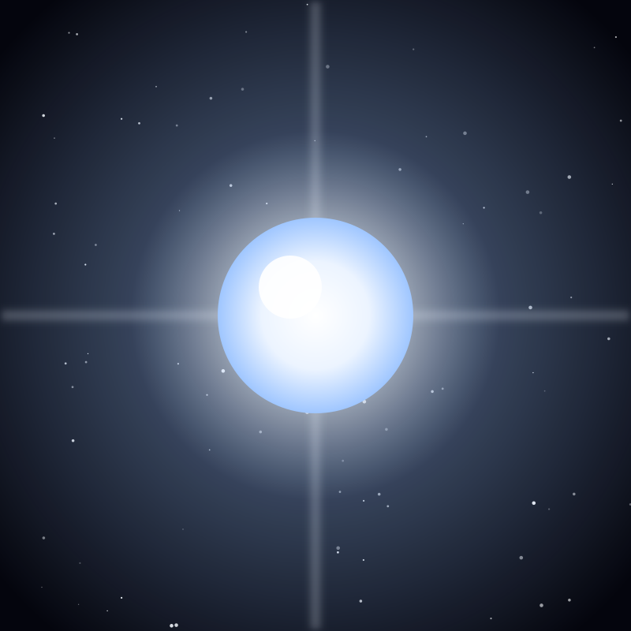

Star
Vega
The fifth-brightest star in the sky and a calibration standard for astronomers, 25 light-years away in Lyra.
Object 18 of 26

Key facts
- Distance
- 25 light-years
- Radius
- 2.36 × Sun
- Mass
- 2.1 × Sun
- Spectral type
- A0V (main sequence)
- Surface temperature
- 9,602 K
- Luminosity
- 40 × Sun
- Age
- ~455 million years
- Constellation
- Lyra
Overview
Vega is the fifth-brightest star in the sky and the brightest in the constellation Lyra, the lyre. It sits 25 light-years away, burns at about 9,600 K, and radiates 40 times the Sun's energy.
It is a young star, roughly 455 million years old, and one of the nearest of its type. On summer nights in the Northern Hemisphere it hangs nearly overhead, the anchor of the small triangle that makes up Lyra.
The Standard Candle
Vega is the reference point of stellar photometry. In 1955 it was defined as the zero point of the UBV magnitude system, meaning every star's brightness was originally measured against Vega.
That convention held until the system was recalibrated so that Vega's measured magnitude is exactly zero. For decades, the brightness of essentially every star you see was calibrated against this one point of light.
A Young Solar System
In 1984 the Infrared Astronomical Satellite detected more infrared radiation coming from Vega than a bare star should produce. The excess turned out to be a disk of dust — the first debris disk ever found around a main-sequence star.
Dust that cold should be blown away or clumped into planets within a few million years, so Vega's disk implies it is continually replenished, likely by collisions between unseen bodies. It was the first strong hint that other stars have planetary systems, a full decade before the first exoplanet was confirmed.
Fast Rotation & the Pole Star
Vega spins at 92 percent of the speed at which it would fly apart, with an equatorial velocity of about 24.6 km/s against 18 km/s at the poles. The centrifugal force bulges it into an oblate shape and makes the poles hotter and brighter than the equator.
Its rotation axis points close to the Sun, which is why Vega was the pole star around 12,000 BC and will be again around 13,700 AD as Earth's axial precession slowly traces a circle among the stars.